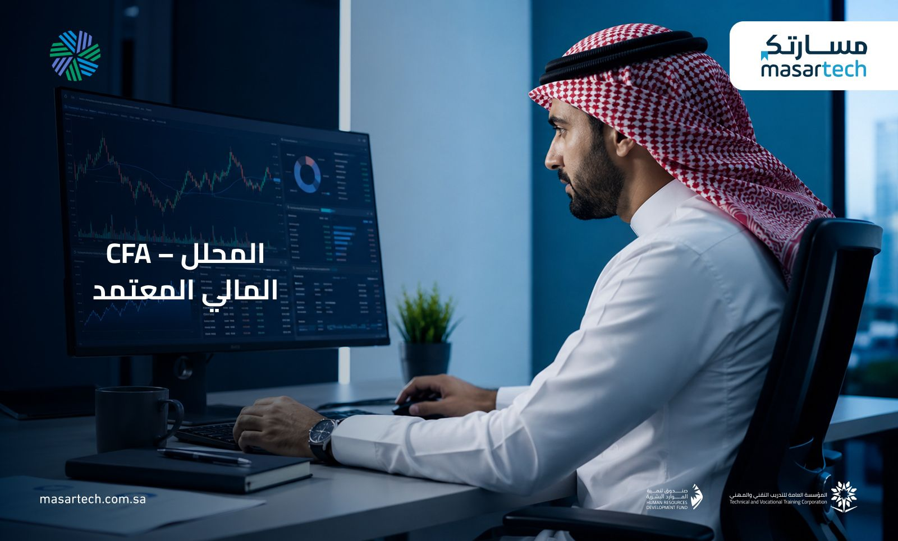
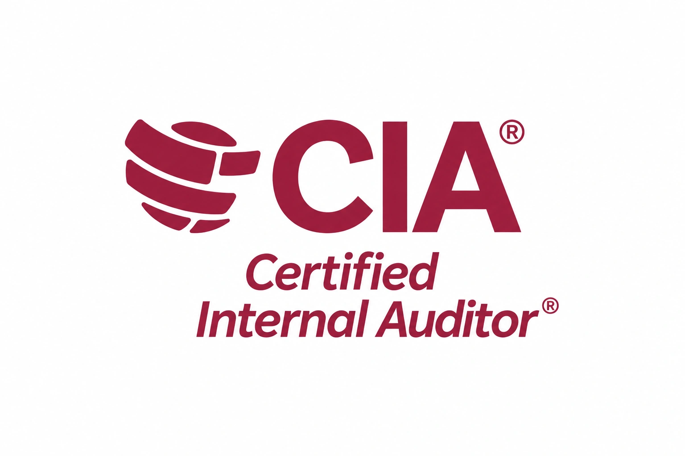
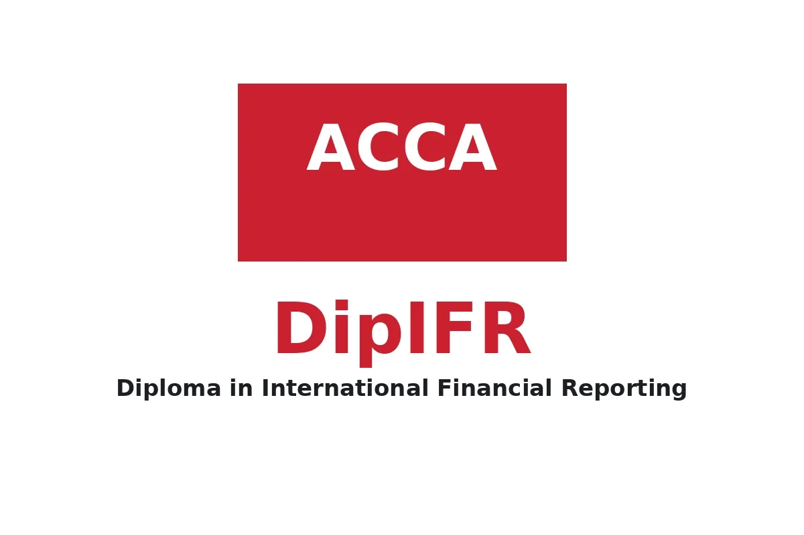

حضوري في الرياض
- المدة: 4 أسابيع
- في مقر معهد مسارتك بالرياض
لا توجد دفعة حضورية مفتوحة حاليًاسجّل في قائمة الانتظار ونبلغك أول ما تُفتح دفعة جديدة.
رسوم الدورة شامل الضريبة1,265
MasarTech
دورة FRM مدير المخاطر المالية برنامج تدريبي من معهد مسارتك للتدريب في الرياض. تُقدَّم الدورة حضوريًا في الرياض أو أونلاين مباشر، ومدتها 4 أسابيع، ورسومها تبدأ من 1,265 ريال شامل الضريبة.
آخر تحديث للمعلومات:
حضوري في مقر منشأتك أو في معهد مسارتك أو أونلاين، بمواعيد تناسب فريقك.
الأهداف، ولمن تناسب، والاختبار والشهادة، في مكان واحد.
دورة FRM مدير المخاطر المالية من معهد مسارتك تساعدك على فهم أسس إدارة المخاطر المالية، التحليل الكمي، الأسواق والمنتجات المالية، التقييم ونماذج المخاطر، مخاطر السوق والائتمان والسيولة والمخاطر التشغيلية، مع التحضير للجزأين الأول والثاني من اختبار Financial Risk Manager الصادر عن GARP.
Financial Risk Manager · التحضير للجزأين الأول والثاني
برنامج تدريبي متخصص يبني قدرتك على قياس المخاطر المالية وتحليلها وربطها بالأسواق والمنتجات والنماذج والائتمان والسيولة والمخاطر التشغيلية، مع خطة منظمة للتحضير لاختباري FRM Part I وPart II من GARP.
Risk Monitor
VaR Market Risk
PD / LGD Credit Risk
LCR Liquidity
FRM · أدوات كمية + قرار مهني
جزآن Part I + Part II
100 + 80 عدد أسئلة الجزأين
4 ساعات لكل جزء من الاختبار
سنتان خبرة مرتبطة للحصول على الشهادة
الصفحة لا تكتفي بوصف عام؛ اختر السؤال الأقرب لوضعك وانتقل مباشرة إلى الإجابة.
ما الفرق بين FRM وCFA وPMI-RMP؟ هل دورة مسارتك تمنح شهادة GARP نفسها؟ كم سؤالًا وكم مدة الاختبار؟ ما موضوعات Part I وPart II؟ هل تحتاج رياضيات قوية؟ هل رسوم GARP ضمن سعر الدورة؟
استفسر وسجّل عبر واتساب اتصل على 920014582 راجع جدول التدريب
مدير المخاطر المالية لا يكتفي بحساب نموذج أو قراءة تقرير؛ المطلوب أن يفهم الافتراضات، يختبر حساسية النتيجة، يحدد حدود النموذج، ثم يشرح أثر الخطر بلغة يفهمها أصحاب القرار.
تركز دورة FRM على بناء هذا الربط بين الأدوات الكمية والسوق والائتمان والسيولة والتشغيل والاستثمار. لذلك صممت الصفحة لتوضح المسار كاملًا: ماذا تتعلم، ما الذي يقيسه كل جزء، ما المطلوب للحصول على الشهادة، وما الذي يجب تأكيده قبل الدفع.
ترخيص التدريب التقني والمهني 224111315311812
ترخيص التعليم الإلكتروني 2000341831046877
السجل التجاري 1010947040
تسمية دقيقة: FRM هي شهادة مهنية من GARP. دورة مسارتك برنامج تدريبي تحضيري، ولا يجوز وصف المعهد بأنه Exam Preparation Provider معتمد من GARP إلا عند وجود إثبات ساري يمكن التحقق منه.
FRM – Financial Risk Manager شهادة مهنية متخصصة في إدارة المخاطر المالية تمنحها Global Association of Risk Professionals – GARP. تقيس قدرة المرشح على فهم أدوات قياس المخاطر وتطبيقها في مواقف مالية واقعية.
مخاطر السوق
قياس أثر تحركات الأسعار والفائدة والعملات والتقلبات على المراكز والمحافظ.
مخاطر الائتمان
فهم احتمالية التعثر والخسارة والتعرض والتحليل الائتماني ونماذج المحفظة.
مخاطر السيولة
تحليل التمويل والسيولة والخزينة والقدرة على الوفاء بالالتزامات تحت الضغط.
المخاطر التشغيلية
فهم الخسائر الناتجة عن العمليات والأنظمة والأشخاص والأحداث الخارجية والمرونة.
التحليل الكمي
استخدام الاحتمالات والإحصاء والانحدار والمحاكاة وقياس المخاطر بحذر مهني.
الاستثمار والمخاطر
ربط العائد بالمخاطرة والمحافظ والتحوط والأداء وإدارة المخاطر الاستثمارية.
الفرق باختصار: FRM متخصصة في المخاطر المالية، بينما CFA أوسع في التحليل والاستثمار وإدارة المحافظ، وPMI-RMP تركز على مخاطر المشاريع لا المخاطر المصرفية والأسواق.
الفصل بين التدريب والشهادة يحمي قرار المتدرب ويمنع أي انطباع غير دقيق عن الجهة المانحة.
ما يقدمه التدريب
ما يمنح الشهادة الدولية
قبل الدفع: تأكد كتابةً هل الباقة تشمل Part I فقط أم الجزأين، وعدد الساعات، والمواد، والمحاكاة، والدعم، وهل رسوم GARP أو الكتب الرسمية مشمولة. لا تفترض أي بند غير ظاهر في عرض التسجيل.
راجع برنامج FRM مباشرة على موقع GARP الرسمي.
تفكير مخاطر منظم
تحلل الاحتمالات والسيناريوهات والحدود بدل الاعتماد على رقم منفرد أو انطباع.
أدوات كمية قابلة للتطبيق
تتعلم متى تستخدم النموذج، وكيف تفسر نتيجته، ومتى تحتاج اختبار ضغط أو تحققًا إضافيًا.
فهم أعمق للتحوط
تربط المشتقات والتسعير والمراكز المالية بهدف إدارة الخطر لا المضاربة العشوائية.
وعي بالحوكمة
تفهم شهية المخاطر والحدود والتقارير والمسؤوليات والرقابة على النماذج.
تخصص مالي واضح
تدعم انتقالك إلى أدوار المخاطر والخزينة والائتمان والتحقق من النماذج والاستشارات.
لغة مهنية مشتركة
تساعدك المصطلحات والمنهجية على التواصل مع فرق المال والاستثمار والرقابة والمراجعة.
تنبيه مهني: الشهادة لا تضمن وظيفة أو راتبًا محددًا. القيمة الفعلية ترتفع عندما تجمع بين الدراسة والخبرة واللغة والتحليل وبرامج البيانات وفهم القطاع.
لا توجد متطلبات أكاديمية للتسجيل في برنامج FRM، لكن الاختبار كمي ومفاهيمي. تحتاج راحة مع الجبر الأساسي، الاحتمالات، الإحصاء، القيم الزمنية للنقود، وقراءة المعادلات وتطبيقها.
Probability الاحتمال الشرطي والتوزيعات والتوقع.
Statistics المتوسط والتباين والارتباط والتقدير.
Regression تفسير المعاملات والملاءمة والقيود.
Time Value الخصم والعوائد والمنحنيات والتدفقات.
Simulation Monte Carlo والسيناريوهات والحساسية.
Risk Measures VaR وES والتقلب وTracking Error.
Derivatives Payoffs والتسعير والتحوط والحساسيات.
Model Judgment الافتراضات والبيانات والمخاطر النموذجية.
الحقيقة غير المعلنة: المشكلة غالبًا ليست صعوبة المعادلة، بل ضعف الأساس أو حفظ الصيغة دون فهم متى تستخدم. لذلك يجب أن تبدأ الدورة باختبار مستوى وخطة تأسيس، لا أن تفترض أن جميع المتدربين متساوون.
01 Value at Risk
احسب مقياسًا، ثم ناقش مستوى الثقة والأفق والافتراضات وما الذي لا يقوله الرقم.
02 Stress Testing
حوّل صدمة سوقية أو ائتمانية إلى أثر على المحفظة والسيولة ورأس المال.
03 Credit Migration
حلل انتقال التصنيف والتعثر والخسارة المتوقعة وتركيز المحفظة.
04 Hedging
اختر أداة تحوط، وحدد نسبة التحوط والمخاطر الأساسية وتكلفة الحماية.
05 Liquidity Gap
رتب التدفقات والاستحقاقات وحدد مصادر الضغط وخيارات التمويل الطارئ.
06 Model Validation
اختبر البيانات والافتراضات والاستقرار والنتائج وحدود الاستخدام.
اختبار مستوى قبل البداية
تحديد فجوات اللغة والرياضيات والمالية حتى لا يبدأ المتدرب من نقطة غير مناسبة.
خطة مرتبطة بموعد الاختبار
تقسيم المنهج والمراجعة والمحاكاة على أسابيع قابلة للقياس.
حل وتفسير لا حفظ
كل مسألة يجب أن تنتهي بتفسير مهني للنتيجة وحدودها.
دفتر أخطاء ومحاكاة
تصنيف الأخطاء إلى مفهوم، معادلة، قراءة سؤال، وقت، أو اختيار بين بدائل.
مرونة حضوري وأونلاين
حسب الدفعات المتاحة مع الحفاظ على التفاعل وحل المسائل والمتابعة.
دعم واضح النطاق
تحديد ما يشمله الدعم قبل التسجيل: أسئلة، تسجيل GARP، مراجعات، ومحاكاة.
حضوري بالرياض أو أونلاين حسب الدفعات والباقة
تواصل لمعرفة السعر لأن الصفحة الحالية لا تثبت باقة موحدة
لا تضع سعرًا تخمينيًا داخل الصفحة: السعر غير المثبت يسبب تعارضًا بين المحتوى ونظام الحجز ويضعف الثقة والتحويل. أضف السعر فقط بعد تأكيد الباقة الحالية.
دورة PMI-RMP لمن يريد التخصص في مخاطر المشاريع بدل المخاطر المالية والأسواق. عرض الدورة
دورة GRCP لتوسيع فهم الحوكمة والمخاطر والامتثال على مستوى المؤسسة. عرض الدورة
دورة CMA لتقوية التخطيط المالي والأداء والتكاليف والقرارات الإدارية. عرض الدورة
دورة Power BI لبناء لوحات مخاطر ومؤشرات وتنبيهات وتقارير للإدارة. عرض الدورة
جميع دورات مسارتك استعرض مسارات المحاسبة والمالية والحوكمة والمخاطر والبيانات. تصفح الدورات
اختر المسار قبل الشهادة FRM ليست البديل الصحيح لكل وظيفة مالية؛ حدد هل هدفك مخاطر أم استثمار أم محاسبة أم مشاريع.
حدد الجزء وموعد الاختبار ومستواك في الرياضيات واللغة، ثم ابنِ جدولًا أسبوعيًا يجمع بين الفهم والمسائل والتفسير والمحاكاة وتحليل الأخطاء. بهذه الطريقة تصبح FRM أداة لتطوير كفاءتك المهنية، لا مجرد هدف اختباري.
دورة FRM مدير المخاطر المالية Financial Risk Manager GARP Market Risk Credit Risk Liquidity Risk Operational Risk VaR Risk Models معهد مسارتك
موظفو البنوك والتمويل
لمن يعمل في المخاطر والائتمان والخزينة والأسواق والرقابة والامتثال.
المحللون الماليون والاستثماريون
لفهم المخاطر التي تقف خلف العائد والتقييم والمحافظ والمنتجات.
المراجعون والمستشارون
لتطوير فهمهم للنماذج والحوكمة والمخاطر المالية والرقابة.
خريجو المالية والاقتصاد
لبناء مسار متخصص، مع ضرورة تقوية اللغة والأساس الكمي والخبرة.
محللو البيانات والنماذج
لربط الإحصاء والبرمجة بقرارات المخاطر والتحقق من النماذج.
الرقابة والجهات التنظيمية
لفهم قياس المخاطر ورأس المال والسيولة والحوكمة وممارسات السوق.
ليست مناسبة لمن يبحث عن شهادة سريعة بلا دراسة: GARP تشير إلى متوسط يقارب 240 ساعة مذاكرة، وقد يزيد أو يقل حسب الخلفية والخبرة.
المسميات تختلف حسب المؤسسة والقطاع والخبرة، والشهادة تدعم المعرفة والمصداقية لكنها لا تعوض الخبرة الفعلية.
| المسار الوظيفي | المهام القريبة من المنهج | ما الذي يقوي فرصك؟ |
|---|---|---|
| Market Risk Analyst | قياس مخاطر السوق والحدود وVaR والضغط والتقارير. | Excel وPython والأسواق والمشتقات والبيانات. |
| Credit Risk Analyst | تحليل الجدارة والتعثر والخسارة والمحافظ والتعرضات. | القوائم المالية والائتمان والنماذج وIFRS 9. |
| Liquidity / Treasury Risk | تحليل التدفقات والتمويل والسيولة والفجوات والسيناريوهات. | الخزينة والميزانية العمومية والتنظيم والتقارير. |
| Operational Risk Specialist | الأحداث والمؤشرات والسيناريوهات والمرونة ومخاطر الطرف الثالث. | العمليات والضوابط والتحقيق والبيانات والحوكمة. |
| Model Risk / Validation | التحقق من البيانات والمنهجية والافتراضات والأداء والاستخدام. | الإحصاء والبرمجة والتوثيق والاستقلالية المهنية. |
| Risk Consultant / Internal Audit | تقييم أطر المخاطر والضوابط والنماذج والتقارير. | التواصل والحوكمة والتدقيق وفهم القطاعات. |
FRM Part I
يركز على بناء القاعدة: مفاهيم إدارة المخاطر، التحليل الكمي، الأسواق والمنتجات المالية، والتقييم ونماذج المخاطر.
100 سؤال 4 ساعات اختيار من متعدد اختبار إلكتروني
Foundations الحوكمة، الأطر، العائد والمخاطر، الأخلاقيات.
Quantitative Analysis الاحتمالات والإحصاء والانحدار والمحاكاة.
Markets & Products السندات والمشتقات والعملات والسلع.
Valuation & Models VaR، التقييم، مخاطر الفائدة والائتمان.
FRM Part II
يركز على استخدام أدوات الجزء الأول في مخاطر السوق والائتمان والتشغيل والسيولة والاستثمار والقضايا المالية الحالية.
80 سؤالًا 4 ساعات اختيار من متعدد تطبيق مهني
Market Risk القياس والإدارة والاختبارات والتقلب.
Credit Risk التعثر والخسارة والتعرض والمحافظ.
Operational & Resilience التشغيل والمرونة والنماذج والحوكمة.
Liquidity, Investment & Current Issues السيولة والخزينة والاستثمار والقضايا الحالية.
لغة الاختبار: بالنسبة للمرشحين في السعودية، يكون الاختبار باللغة الإنجليزية. لذلك يجب أن تتضمن خطة الدراسة فهم المصطلح الإنجليزي، لا ترجمة المحتوى وحفظه فقط.
اختر Part I أو Part II، ثم اربط الجدول بموعد الاختبار الفعلي ووقت المراجعة.
التسجيل ودفع الرسوم خطوة، واختيار الموعد والمكان خطوة منفصلة يجب إكمالها.
ركز على الأدوات والأسس، مع حل مسائل وأسئلة متعددة ومراجعة منهجية للأخطاء.
طبق الأدوات على أنواع المخاطر، مع اهتمام أكبر بالحكم المهني وربط الموضوعات.
يجب أن يكون تحديد المخاطر أو قياسها أو مراقبتها أو إدارتها جزءًا مهمًا من مسؤوليات العمل.
تتوقع GARP من حملة FRM جمع 40 رصيد CPD كل سنتين للمحافظة على المعرفة الحديثة.
لا توجد شروط أكاديمية أو مهنية للتسجيل في الاختبار: لكن الحصول على اللقب النهائي يتطلب النجاح في الجزأين وإثبات الخبرة المناسبة.
لا توجد دفعات مفتوحة الآن. سجّل في قائمة الانتظار ونبلغك أول ما تُفتح دفعة.
رسوم الاختبار الدولي غير مشمولة في رسوم الدورة ما لم يُذكر ذلك صراحة.
كل ما تحتاجه لشهادتك القادمة في مكان واحد.
الوحدات التي تغطيها دورة FRM مدير المخاطر المالية بالترتيب.
يمكن تقديم البرنامج كباقة للجزء الأول، أو الجزء الثاني، أو مسار كامل. يجب أن يوضح عرض التسجيل أي مسار مشمول فعليًا.
| الوحدة | أبرز الموضوعات | التطبيق داخل التدريب |
|---|---|---|
| أسس إدارة المخاطر | حوكمة المخاطر، شهية المخاطر، الأطر، العائد مقابل المخاطرة، الأزمات المالية، أخلاقيات GARP. | تحليل حالة مؤسسة وتحديد فجوات الحوكمة والحدود والتصعيد. |
| التحليل الكمي | الاحتمالات، التوزيعات، العينات، التقدير، اختبار الفرضيات، الانحدار، السلاسل الزمنية، المحاكاة. | حل مسائل وتفسير النتائج والتحقق من الافتراضات. |
| الأسواق والمنتجات | السندات، العملات، السلع، العقود الآجلة، العقود المستقبلية، الخيارات، المبادلات، الأوراق المهيكلة. | رسم التدفقات وتحديد مصدر الخطر وأداة التحوط المناسبة. |
| التقييم ونماذج المخاطر | القيمة المعرضة للخطر، العجز المتوقع، التقلب، الارتباط، مخاطر الفائدة، تسعير المشتقات ونماذج الائتمان. | مقارنة النماذج وتفسير القيود واختبار الحساسية. |
| مخاطر السوق | VaR وES، Backtesting، Stress Testing، مخاطر التقلب والارتباط، إدارة حدود السوق. | قراءة تقرير سوق وتحديد المخاطر التي يخفيها المتوسط. |
| مخاطر الائتمان | PD وLGD وEAD، التصنيف، مخاطر الطرف المقابل، الائتمان الهيكلي، المحافظ، المشتقات الائتمانية. | تحليل مقترض ومحفظة وبناء سيناريو خسارة. |
| المخاطر التشغيلية والمرونة | تصنيف الأحداث، مؤشرات المخاطر، السيناريوهات، رأس المال، استمرارية الأعمال، مخاطر النماذج والتقنية. | تحليل حدث تشغيلي وتحديد الأسباب والإجراءات والحدود. |
| السيولة والخزينة | سيولة السوق والتمويل، فجوات الاستحقاق، إدارة الضمانات، اختبارات الضغط، مؤشرات السيولة. | بناء تصور لتدفقات الضغط وخطة تمويل طارئة. |
| المخاطر والاستثمار | المحافظ، عوامل المخاطر، الأداء المعدل بالمخاطر، صناديق التحوط، إدارة المخاطر الاستثمارية. | مقارنة محافظ على أساس العائد والمخاطرة لا العائد وحده. |
| القضايا الحالية والمراجعة | موضوعات يحددها منهج العام، تحديثات السوق والتنظيم، محاكاة الاختبار وتحليل الفجوات. | خطة مراجعة مبنية على نقاط الضعف ودفتر أخطاء. |
أفضل طريقة للتدريب: مفهوم مختصر، مثال رقمي، تفسير النتيجة، سؤال سيناريو، ثم مراجعة الخطأ. حل المسائل بلا تفسير لا يبني مدير مخاطر، والشرح النظري بلا مسائل لا يكفي للاختبار.
لا توجد آراء منشورة لهذه الدورة بعد، وهذه آراء متدربين في دورات أخرى لدى معهد مسارتك.
هي شهادة Financial Risk Manager التي تمنحها GARP، وتركز على أدوات وممارسات قياس وإدارة المخاطر المالية في السوق والائتمان والسيولة والتشغيل والاستثمار.
يتكون البرنامج من جزأين: Part I للأدوات والأسس، وPart II لتطبيق الأدوات على أنواع المخاطر.
Part I يتكون من 100 سؤال اختيار من متعدد خلال 4 ساعات، وPart II من 80 سؤالًا خلال 4 ساعات.
لا توجد متطلبات أكاديمية أو مهنية مسبقة للتسجيل. لكن الحصول على الشهادة النهائية يتطلب النجاح في الجزأين وإثبات سنتين من الخبرة ذات الصلة.
بالنسبة للمرشحين في السعودية، الاختبار باللغة الإنجليزية. توفر GARP خيار الصينية المبسطة لبعض المرشحين في البر الرئيسي للصين فقط.
يمكن التسجيل للجزأين في الإدارة نفسها وفق قواعد GARP، لكن Part II لا يُقيَّم إذا لم ينجح المرشح في Part I. القرار يحتاج تقديرًا واقعيًا للوقت والاستعداد.
تشير GARP إلى متوسط يقارب 240 ساعة، وقد يختلف كثيرًا حسب الخلفية في المالية والرياضيات واللغة والخبرة.
المستوى قريب من مقرر مالي جامعي متقدم أو تمهيدي للدراسات العليا. تحتاج فهمًا عمليًا للاحتمالات والإحصاء والانحدار والقيمة الزمنية والمشتقات، ولا توجد ورقة معادلات في الاختبار.
FRM أكثر تخصصًا في المخاطر المالية وقياسها وإدارتها، بينما CFA أوسع في التحليل المالي والتقييم والاستثمار وإدارة المحافظ.
FRM تركز على مخاطر الأسواق والائتمان والسيولة والتشغيل داخل القطاع المالي، بينما PMI-RMP تركز على إدارة مخاطر المشاريع.
لا. الدورة تحضيرية. لقب FRM يصدر من GARP بعد النجاح في الجزأين واستيفاء متطلبات الخبرة والسياسات.
لا تفترض شمولها إلا إذا ذكر عرض التسجيل ذلك كتابةً. رسوم التدريب ورسوم GARP والكتب الرسمية عناصر منفصلة عادة.
يجب اعتماد السعر من الباقة ونظام الحجز الحاليين، لأن السعر يتغير بحسب الجزء وطريقة الحضور والمواد والدعم المشمول.
منها محلل مخاطر السوق، محلل مخاطر الائتمان، مخاطر السيولة والخزينة، المخاطر التشغيلية، التحقق من النماذج، الاستشارات والمراجعة المرتبطة بالمخاطر.
تواصل عبر واتساب على 966115116066 أو اتصل على 920014582 لتحديد الجزء والدفعة وطريقة الحضور والمواد والسعر.
دورات قريبة من دورة FRM مدير المخاطر المالية قد تناسب خطوتك التالية.

حضوري وأونلاين

معهد مسارتك بالرياض

مسارتك

مسارتك

مسارتك

المحاسب الإداري المعتمد: مستقبلك المهني يبدأ من هنا

المحاسب القانوني الأمريكي - مسارتك

دبلوم المعايير الدولية - مسارتك

أساسيات المحاسبة والمالية – مسارتك

النمذجة والتقييم المالي - مسارتك
سجّل في دورة FRM مدير المخاطر المالية اليوم، أو تواصل معنا ونساعدك تختار الموعد المناسب.